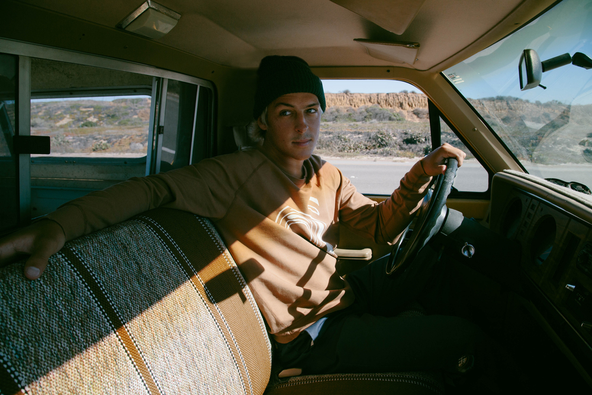
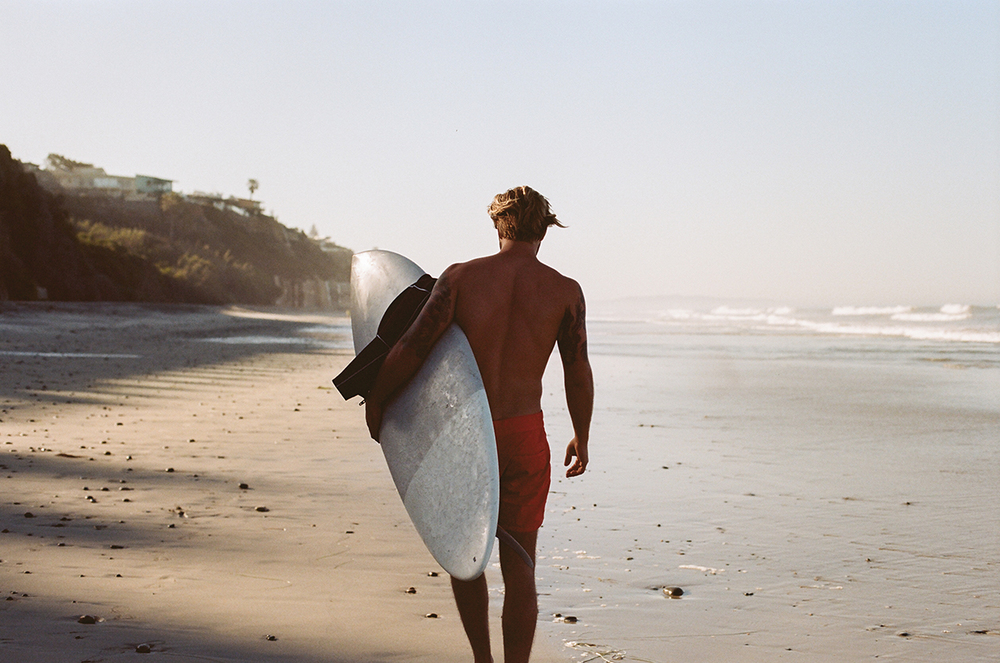
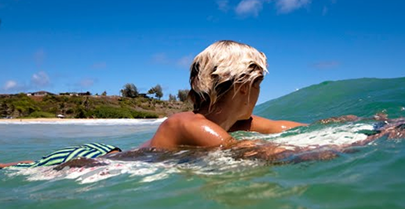
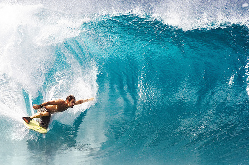

Kalcutta Beach, Maui. Definitely one of my favorite beaches of all time. This day was awesome, even though I got stung by a jelly. Waves were sick, the vibes were even sicker. I was hitting one after another this day with three of my best friends. It was rather a spur of the moment trip. We just piled in the van and left at 10 and still made it for peak surfing time despite our hangovers. This is a snap I took of my friend who was just enjoying the sun and taking a break from the surf.

Maui. Just thought this was a dope picture of my friend and the van that we basically live in. He is that kid that always finds his way in and out of trouble. He is there when I need anything and always has the most positive and idealistic attitude. Damn, does he make everything exciting. He's the friend that all the dudes needs and all the chicks swoon over. Chicks, if you're reading this, this guy is TROUBLE.

Venice Beach, California. This is a picture of me on one of my favorite non-island beaches. This was a week trip to do some shredding and visit some boys out in the Los Angeles area. Waves were decent, but the people were phenomenal. I have always considerd moving out to L.A., but the island waves do wonders on all who surf on them. Anyways, I thought this was a pretty sick picture, so I put it in.

Wakiki Beach, Honolulu. Meet my lil bro! This little grom has some success ahead of him, but who knows if he can out surf me one day. He's got that raw talent of pure island boys, but I'm not sure if he has the drive. He's alraedy getting in to trouble with the girls around him, saying they are too distracting.

Kakahuna, Maui. This was a pic a snapped at my first ever semi-pro competition. That is one of my all time idols Kelly Slater, and it was dope to watch him shred in person. He makes it look so effortless. I was lucky enough to meet the guy afterwards and he's one of the nicest dudes I've ever met. The weather on this day was rad. I was a little nervous, but wasn't expecting a whole lot at my first competition. I just tried to go out their and enjoy myself. That philosophy paid off because I got 2nd place overall. That feeling was one of the most surreal I've ever felt in my life. I was always the little nugget looking from the crowd dreaming of one day making a tournament and standing on that podium. I finally made it up there. I don't really have much else to say about it, except I was truly happy and felt in my element. I've got a lot of work to do though, and imrpovement is coming. Trying to snag the #1 spot one of these times.